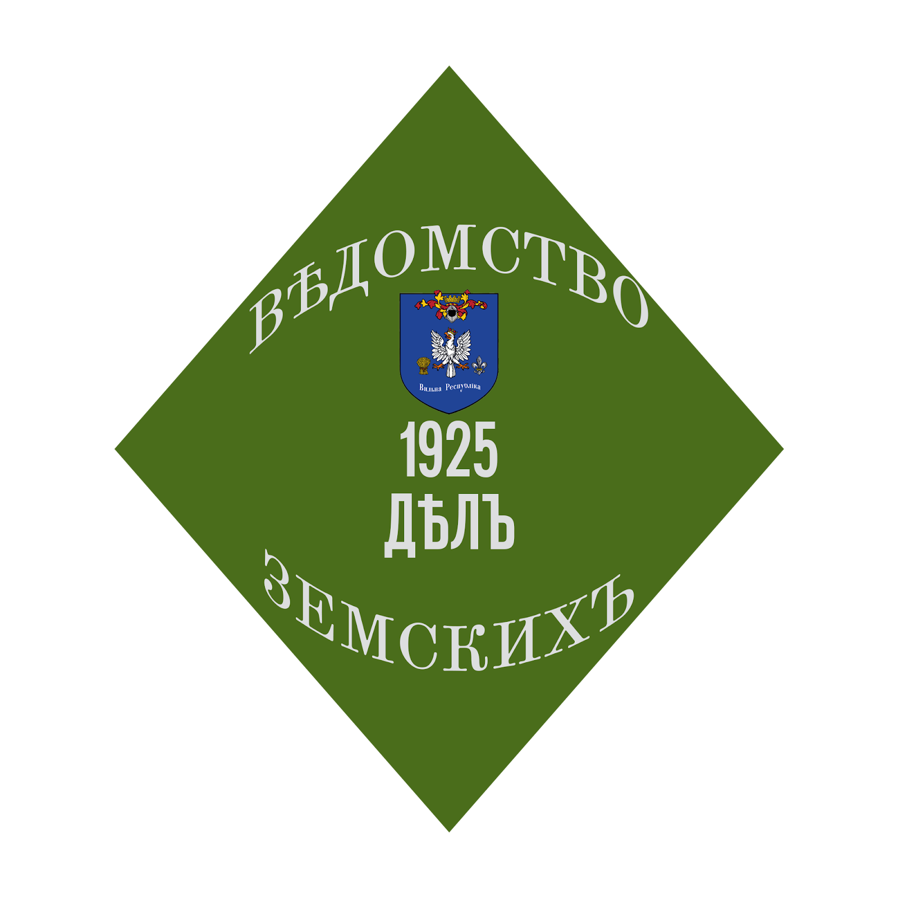

Земство — це особливий орган управління на місцевому рівні, створений для турботи про життя та порядок у наших селах та повітах.
Це збори обраних підданих, які стежать за тим, щоб земля була доглянута, дороги проїжджими, а мешканці захищені від бід і несправедливості.
Земство вирішує питання, важливі для кожного: від ремонту мостів до допомоги нужденним та розподілу податків.
Простіше кажучи, земство — це руки та очі князя в землі, найближча до народу влада, яка допомагає зробити життя кращим.
Завдання та Обов'язки
Земельний Кадастр
Облік земель та володінь, ведення земельної книги.
Фіскальне управління
Затвердження зборів та повинностей, розподіл податків на благо князівства.
Суспільне віче
Організація місцевих сходів для вирішення суспільних питань та спорів.
Інфраструктурний нагляд
Контроль за станом доріг, мостів та громадських будівель.
Соціальна опіка
Сприяння нужденним та захист від свавілля чиновників.
Структура та Склад
- 1. Маршалок Земський Призначається князем з числа найбільш гідних та мудрих.
- 2. Члени Земських Зборів Повітові землевласники, купці, ремісники, по можливості з грамотністю та честю.
- 3. Писар Земський Веде протоколи та зберігає записи.
Діяльність
Земські Збори збираються регулярно, за указом Голови, а в невідкладних випадках — на вимогу членів. У зборах ведеться суворий облік всіх справ, озвучуються скарги та клопотання, виробляються рішення на подання Князю і Канцлеру.
Земство — оплот народної сили та опора нашого князівства. Без нього немає порядку та немає розвитку. Нехай служить воно з честю та вірністю князівству.